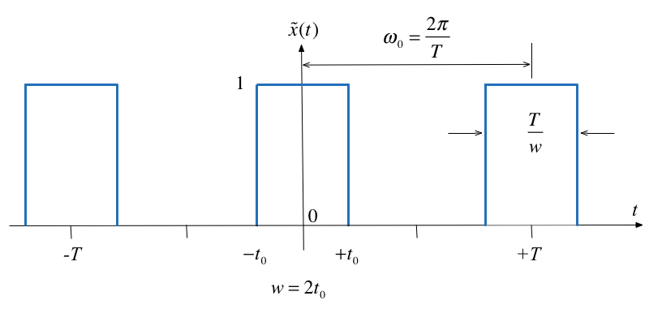

Colophon
This worksheet can be downloaded as a PDF file. We will step through this worksheet in class.
An annotatable copy of the notes for this presentation will be distributed before the second class meeting as Worksheet 12 in the Week 6: Classroom Activities section of the Canvas site. I will also distribute a copy to your personal Worksheets section of the OneNote Class Notebook so that you can add your own notes using OneNote.
You are expected to have at least watched the video presentation of Chapter 5.1 of the notes before coming to class. If you haven't watch it afterwards!
After class, the lecture recording and the annotated version of the worksheets will be made available through Canvas.
This analysis is from Boulet pp 142—144 and 176—180.
Let $\tilde x(t)$ be the Fourier series of the rectangular pulse train shown below:

Fourier Series
In the previous section we used
$$C_k = \frac{1}{2\pi}\int_{-\pi/w}^{\pi/w} Ae^{-jk(\Omega_0 t)}\,d(\Omega_0 t) = \frac{A}{2\pi}\int_{-\pi/w}^{\pi/w} e^{-jk(\Omega_0 t)}\,d(\Omega_0 t) $$to compute the line spectra.
x = linspace(-5,5,1000);
plot(x,sin(pi.*x)./(pi.*x))
grid
title('Graph of sinc function')
ylabel('sinc(u)')
xlabel('u')
The spectral coefficients expressed using the normalized sinc function and the duty cycle can be written as
$$C_k = \frac{2t_0}{T}\frac{\sin\left(\frac{\pi k2t_0}{T}\right)}{\frac{\pi k2t_0}{T}}=\frac{2t_0}{T}\operatorname{sinc}\left(\frac{k2t_0}{T}\right)$$$$C_k = \eta \operatorname{sinc}\left(k\eta\right)$$Normalize the spectral coefficients
Let us normalize the spectral coefficients of $\tilde x(t)$ by mutiplying them by $T$, and assume $t_0$ is fixed so that the duty cycle $\eta = 2t_0/T$ will decrease as we increase $T$:
$$T C_k = T\eta \operatorname{sinc}\left(k\eta\right)=2t_0\operatorname{sinc}\left(k\frac{2t_0}{T}\right)$$Then the normalized coefficents $T C_k$ of the rectangular wave is a sinc envelope with constant amplitude at the origin equal to $2t_0$, and a zero crossing at fixed frequency $\pi/t_0$ rad/s, both independent of $T$.
open duty_cycle
Demo
Run duty_cycle with values of:
- 50% ($\eta = 1/2$)
- 25% ($\eta = ?$)
- 12.5% ($\eta = ?$)
- 5% ($\eta = ?$)
Comments
- As the fundamental period increases, we get more spectral lines packed into the lobes of the sinc envelope.
These normalized spectral coefficients turn out to be samples of the continuous sinc function on the spectrum of $\tilde{x}(t)$
The two spectra are plotted against the frequency variable $k\omega_0$ with units of rad/s rather than index of harmonic component
- The first zeros of each side of the main lobe are at frequencies $\omega = \pm \pi/t_0$ rad/s
- The zero-crossing points of sinc envelope are independent of the period T. They only depend on $t_0$.
Intuition leading to the Fourier Transform
- An aperiodic signal that has been made periodic by "repeating" its graph every $T$ seconds will have a line spectrum that becomes more and more dense as the fundamental period is made longer and longer.
- The line spectrum has the same continuous envelope.
- As $T$ goes to infinity, the line spectrum will become a continuous function of $\omega$.
- The envelope is this function.
Doing the Maths
See the notes.
Inverse Fourier Transform:
$$x(t) = \frac{1}{2\pi} \int_{-\infty}^{\infty} X(j\omega)e^{j\omega t}\,d\omega := \mathcal{F}^{-1} \left\{X(j\omega)\right\}$$Similarly, given the expression we have already seen for an arbitrary $x(t)$:
Fourier Transform:
$$X(j\omega) = \int_{-\infty}^{\infty}x(t)e^{-j\omega t}\,dt := \mathcal{F}\left\{x(t)\right\}.$$Table of Properites of the Fourier Transform
As was the case of the Laplace Transform, properties of Fourier transforms are usually summarized in Tables of Fourier Transform properties. For example this one: Properties of the Fourier Transform (Wikpedia) and Table 8.8 in Karris (page 8-17).
More detail and some commentry is given in the printable version of these notes.
| Name | $f(t)$ | $F(j\omega)$ | Remarks | |
| 1 | Linearity | $a_1f_1(t)+a_2f_2(t)+\cdots+a_nf_n(t)$ | $a_1F_1(j\omega)+a_2F_2(j\omega)+\cdots+a_nF_n(j\omega)$ | Fourier transform is a linear operator. |
| 2 | Symmetry | $2\pi f(-j\omega)$ | $F(t)$ | |
| 3. | Time and frequency scaling | $f(\alpha t)$ | $$\frac{1}{|\alpha|}F\left(j\frac{\omega}{\alpha}\right)$$ | time compression is frequency expansion and *vice versa* |
| 4. | Time shifting | $$f(t-t_0)$$ | $$e^{-j\omega t_0}F(j\omega)$$ | A time shift corresponds to a phase shift in frequency domain |
| 5. | Frequency shifting | $$e^{j\omega_0 t}f(t)$$ | $$F(j\omega-j\omega_0)$$ | Multiplying a signal by a complex exponential results in a frequency shift. |
| 6. | Time differentiation | $$\frac{d^n}{dt^n}\,f(t)$$ | $$(j\omega)^nF(j\omega)$$ | |
| 7. | Frequency differentiation | $$(-jt)^n f(t)$$ | $$\frac{d^n}{d\omega^n}F(j\omega)$$ | |
| 8. | Time integration | $$\int_{-\infty}^{t}f(\tau)d\tau$$ | $$\frac{F(j\omega)}{j\omega}+\pi F(0)\delta(\omega)$$ | |
| 9. | Conjugation | $$f^*(t)$$ | $$F^*(-j\omega)$$ | |
| 10. | Time convolution | $$f_1(t)*f_2(t)$$ | $$F_1(j\omega) F_2(j\omega)$$ | Compare with Laplace Transform |
| 11. | Frequency convolution | $$f_1(t)f_2(t)$$ | $$\frac{1}{2\pi} F_1(j\omega)*F_2(j\omega)$$ | This has application to amplitude modulation as shown in Boulet pp 182—183. |
| 12. | Area under $f(t)$ | $$\int_{-\infty}^{\infty} f(t)\,dt = F(0)$$ | Way to calculate DC (or average) value of a signal | |
| 13. | Area under $F(j\omega)$ | $$f(0) = \frac{1}{2\pi}\int_{-\infty}^{\infty} F(j\omega)\,d\omega$$ | ||
| 14. | Energy-Density Spectrum | $$E_{[\omega_1,\omega_2]}:=\frac{1}{2\pi}\int_{\omega_1}^{\omega_2}|F(j\omega)|^2\,d\omega.$$ | ||
| 15. | Parseval's theorem | $$\int_{-\infty}^{\infty}|f(t)|^2\,dt=\frac{1}{2\pi}\int_{-\infty}^{\infty}|F(j\omega)|^2\,d\omega.$$ | Definition RMS follows from this |
See also: Wikibooks: Engineering Tables/Fourier Transform Properties and Fourier Transfom—WolframMathworld for more complete references.
syms t v omega x;
ft = exp(-t^2/2);
Fw = fourier(ft,omega)
pretty(Fw)
Check by computing the inverse using ifourier
ft = ifourier(Fw)